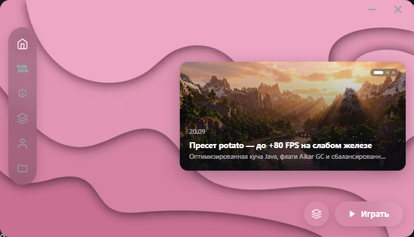
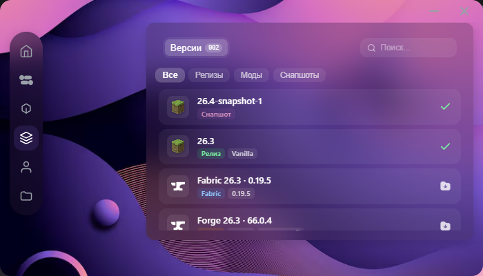

У каждой версии Minecraft своя папка с модами.
canger ставит Vanilla, Fabric, Forge и NeoForge из официальных источников, сам подбирает подходящую Java и запускает игру с модами только той версии, которую вы выбрали. Профилей нет — есть версии.
Установщик 3,1 МБ. Ничего доустанавливать не нужно: Java подбирается автоматически.

Почему версии, а не профили
Один профиль на все версии — это путь к ошибке «Incompatible mods found»: мод от Fabric 1.21 не запускается на 26.3. В canger игровая папка — это сама версия, поэтому чужие моды в неё физически не попадают.
Моды живут в своей папке
versions/<id>/mods — отдельная папка для каждой технической версии. Копировать моды при переключении не нужно.
Миры и настройки не смешиваются
Свои saves, config, resourcepacks, shaderpacks, logs и options.txt у каждой версии.
Несовместимые моды ловятся до запуска
Перед стартом Java проверяется fabric.mod.json: если мод требует другую версию Minecraft или другой диапазон Java — запуск блокируется с понятным текстом.
Java подбирается сама
Нужный мажор версии скачивается с Adoptium и проверяется по SHA-256. Ставить Java вручную не нужно.
Общее не дублируется
libraries, assets и objects хранятся один раз на всех версиях, а не копируются в каждую папку.
Скачивания проверяются
Installer-ы Forge и NeoForge, клиент Mojang, библиотеки и ассеты проверяются по контрольным суммам. Загрузка идёт во временный файл и переименовывается атомарно.
Как это устроено на диске
Игровой каталог версии — это сам versions/<id>, он и передаётся как --gameDir.
%APPDATA%\.minecraft\ versions\<id>\ JSON, JAR и natives этой версии versions\<id>\mods\ моды только этой версии versions\<id>\saves\ миры только этой версии versions\<id>\config\ конфиги модов versions\<id>\options.txt libraries\ общие библиотеки assets\ общие ресурсы runtime\ Java
Старые моды из общего .minecraft\mods автоматически не переносятся — это сделано намеренно,
чтобы не подмешать несовместимый набор. Скопируйте нужное в versions\<id>\mods руками.
Что поддерживается
Каталог собирается из официальных manifest-файлов, а не из захардкоженного списка.
- Vanilla и снапшоты — полный список релизов и снапшотов Mojang.
- Fabric — одна последняя совместимая сборка на каждую версию Minecraft.
- Forge 1.13+ — автоматическая установка через официальный installer с проверкой SHA-1 и валидацией созданного профиля.
- NeoForge — последняя стабильная сборка для точной версии Minecraft; installer проверяется по SHA-256.
- Моды — каталог Modrinth, установка по контрольной сумме, блокировка несовместимых файлов до запуска.
Приложение
Оба скриншота сняты с собранного canger.exe, а не нарисованы.

Скачать 0.1.0
Файлы из релиза на GitHub. SHA-256 — для проверки целостности.
- Требования — Windows x64. Linux и macOS не собирались и не тестировались.
- Для сборки из исходников — Node.js 20.19+ или 22.12+, Rust 1.89+.